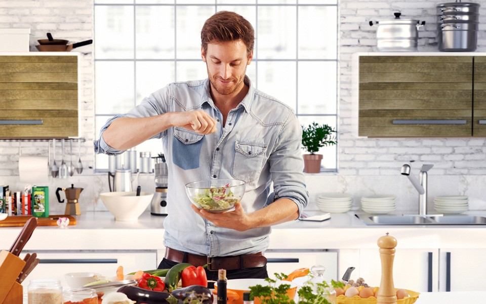

Página inicial
Artigos
Como cozinhar melhor
Cozinhar não é apenas seguir receitas — é entender processos, desenvolver sensibilidade e aprender a equilibrar sabores.
Pequenos cuidados fazem toda a diferença entre uma comida comum e um prato realmente saboroso.

Se você quer evoluir na cozinha, siga essas 11 dicas fundamentais que vão transformar sua forma de cozinhar.
- Escolha os ingredientes: Uma boa receita começa antes mesmo do fogão ser ligado.
Ingredientes frescos e de qualidade fazem grande parte do trabalho sozinhos.Prefira:
- Legumes firmes e brilhantes
- Ervas frescas sempre que possível
- Carnes com boa aparência e cheiro
- Não confie 100% nas receitas:as receitas são guias, não regras absolutas.
Fatores como:
- Tipo de fogão
- Tamanho da panela
- Qualidade dos ingredientes
- gosto pessoal
Podem alterar completamente o resultado final. Aprenda a ajustar sal, tempo e
temperatura conforme necessário.
- Faça omise in place:Mise en place é um termo francês que significa “tudo em seu lugar”.
Antes de começar:
- Lave
- Corte
- Meça
- Organize todos os ingredientes
- Prove a comida enquanto cozinha:O paladar é sua principal ferramenta.
Provar durante o preparo permite:
- Corrigir o sal
- Equilibrar acidez
- Ajustar temperos
- Acompanhar o tempo correto
- Crie um mix de sabores:Um prato equilibrado normalmente combina diferentes sensações:
- Salgado
- Doce
- Ácido
- Amargo
- Umami
- Use temperos secos:Temperos secos são ótimos aliados, principalmente no dia a dia.
- Dica importante:
- Adicione no início do preparo permitindo que liberem aroma e sabor com o calor:
- Orégano
- Páprica
- Cominho
- Cúrcuma
- Pimenta do reino
- Não queime o alho:Alho queimado amarga toda a preparação.
Dicas:
- Use o fogo médio
- Adicionar o alho após a cebola
- mexer contantemente
- Não mexa demais a panela:Mexer excessivamente pode impedir que os alimentos desenvolvam
sabor.
Carnes, legumes e até arroz precisam de contato direto com a panela quente para criar
crostas e intensificar o gosto.
Às vezes, o melhor movimento é não mexer.
- Massa no molho e não molho na massa:O método correto é finalizar a massa dentro do molho.
Assim:
- O macarrão absorve o sabor
- O amido ajuda a emussificar o molho
- O prato fica mais cremoso
- Faça a mantecatura do risoto: é o passo final do risoto.
Após desligar o fogo:
- Adicione manteiga gelada
- Acrescente queijo ralado
- Misture vigorosamente
- Aprenda a reação de Maillard:A reação de Maillard é responsável pelo dourado e pelo sabor intenso dos alimentos.
Ela acontece quando proteínas e açúcares são expostos ao calor alto, criando aromas complexos.
- Carne bem selada
- Pão tostado
- Legumes caramelizados